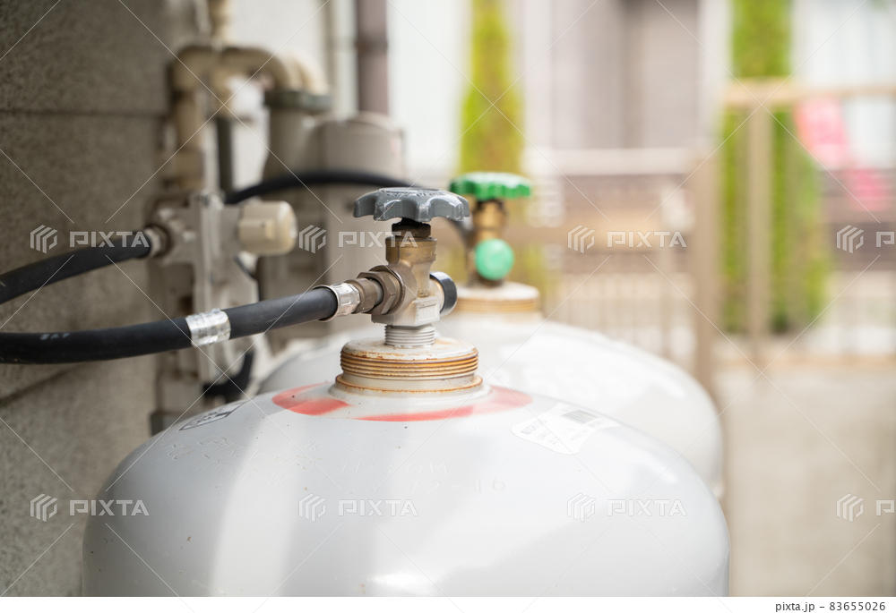
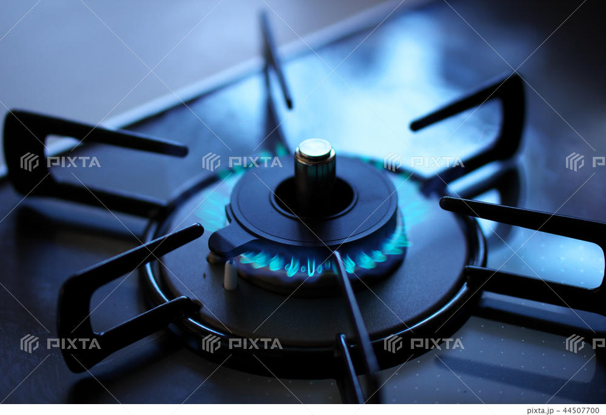

くらしを支える、サントーコー
Living Life Solution
LPガスの豆知識
Live well,feel good
LPガスの豆知識

- ご安心ください。ＬＰガスのボンベは、私たちサントーコーの社員が、安全であると認めた場所に設置しています。
- また、転倒防止措置をしっかりと施していますので、地震の揺れによる転倒や、水害による流失の心配もありません。

- ほぼ同じ用途で使われている２つのガス。でも、ＬＰガスの１立方メートルあたりの熱量は都市ガスの約２倍です。
- またもう一つの違いは、地下から導管供給する都市ガスとくらべ、ＬＰガスは定期的に配送・点検をしています。
- ＬＰガスは日本全国どこでも使用でき、同じ消費設備や器具を使用することができます。
- ＬＰガスは都市ガスに比べ高カロリーなので強い火が必要な飲食店などで愛用されています。
- 地震などの災害時ではその復旧の早さが実証されています。
避難所や仮設住宅でも多く使われているのがＬＰガスなんです！
- ＬＰガスは本来無色・無臭の気体であり、万一洩れたときにすぐに分るように、たまねぎの腐ったようなにおい（付臭剤）をわざとつけてあります。
- この「付臭剤」はＬＰガスとともに気化して燃焼しますが、気化スピードがＬＰガスより遅いため、ボンベの残量が少なくなると付臭剤の濃度が相対的に高くなり、燃焼時にガス臭いと感じることがあります。
- 最近言われている地球温暖化の原因と言われているCO2（二酸化炭素）の排出量が少なく、酸性雨の原因となるSOｘ（硫黄酸化物）の排出も少ない、クリーンなエネルギーなんです。
- さて、どうしても避けられないのが電気との比較ですが、つい電気はクリーンなエネルギーと思ってしまいがちですよね。確かに電気は家の中では火が燃えることがないので、CO2は発生しません。でもその電力は必ず発電所でつくられます。その発電所の主力である火力発電所では石炭・石油などのエネルギーを燃焼させることによって大量のCO2を発生させています。さらに、実際には火力発電所で燃焼させた燃料の約４４％しか電気として生かされず、残りの５６％は無駄に環境に排出されている（海などに廃棄）ことになるのです。
- その点、ＬＰガスは100％皆様の元へ運ばれています。地球環境のこと、ふと考えると家庭の中だけのことではないんですよね。私ももちろん電気は使ってますよ。電気には電気の得意なところ、ＬＰガスにはＬＰガスの得意なところでベストミックスすることが、地球にとっても家庭にとっても心地よいことなのかなって思います。